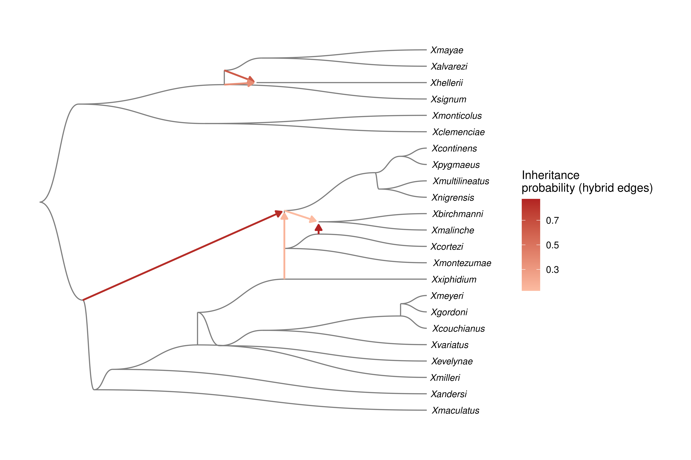
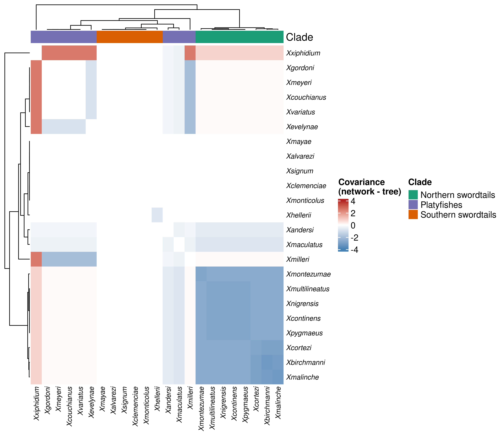

library(here)
library(GraphExperiment)
library(tidyverse)
library(ggraph)
library(ComplexHeatmap)
library(patchwork)
# Load helper functions
source(here("code", "phylo_graph_utils.R"))
set.seed(123) # for reproducibility7 Use case 7: comparative methods on phylogenetic networks
Phylogenetic comparative methods (PCMs) typically assume that species relationships can be represented by a tree. However, reticulate evolutionary processes such as hybridization and introgression are common across the tree of life, and species relationships are often better described by phylogenetic networks, i.e., directed acyclic graphs (DAGs) in which some nodes (hybrid nodes) have more than one parent (Solís-Lemus and Ané 2016). Ignoring reticulation can bias estimates of evolutionary rates and lead to incorrect model selection (Morley, Lehmberg, and Kong 2026), but PCMs that explicitly model trait evolution on networks are still scarce, with notable exceptions such as the extension of Brownian motion (BM) models and phylogenetic regression to networks by Bastide et al. (2018).
Here, we will demonstrate how GraphExperiment can be used as the core data structure for comparative analyses using graphs (instead of trees) to represent species relationships. We will use data on Xiphophorus fishes (swordtails and platyfishes) from Bastide et al. (2018), which include phylogenetic networks inferred with SNaQ and two traits (Cui et al. 2013): the sword index (length of the sword, an extension of the caudal fin in males, relative to body size) and female preference for a sword.
The helper functions used in this chapter (read_network_dag(), network_vcv(), vcv2graph(), graph2vcv(), and graph_gls()) are defined in the file code/phylo_graph_utils.R, and their source code is available in the Appendices.
7.1 Data description
The data comprise a file with three time-calibrated networks (with 0, 1, and 3 reticulations) in extended Newick format, and a CSV file with trait data.
# Read networks
networks <- readLines(here("data", "xiphophorus_networks_calibrated.tre"))
# Read traits
traits <- read_csv(here("data", "xiphophorus_morphology_Cui_etal_2013.csv"))
head(traits)# A tibble: 6 × 3
tipnames sword_index preference
<chr> <dbl> <dbl>
1 Xalvarezi 0.65 NA
2 Xandersi 0.35 NA
3 Xbirchmanni 0.275 -0.33
4 Xclemenciae 0.564 0.44
5 Xcontinens 0.3 NA
6 Xcortezi 0.37 NA We will represent species relationships as DAGs using igraph objects. Edges have attributes length (branch lengths) and gamma (inheritance probabilities, i.e., the proportion of the genome inherited from each parent; for tree edges, gamma is 1). The function read_network_dag() reads networks in extended Newick format and returns such DAGs. Here, we will use the network with 0 reticulations (i.e., a tree) and the one with 3 reticulations.
# Read tree (0 reticulations) and network (3 reticulations) as DAGs
dag_tree <- read_network_dag(networks[1])
dag_net <- read_network_dag(networks[3])
dag_netIGRAPH 3ba5798 DN-- 51 53 --
+ attr: name (v/c), is_tip (v/l), length (e/n), gamma (e/n)
+ edges from 3ba5798 (vertex names):
[1] node1 ->node2 node2 ->node3 node3 ->node4
[4] node4 ->node5 node5 ->node6 node6 ->node7
[7] node7 ->node8 node8 ->node9 node9 ->node10
[10] node10->Xgordoni node10->Xmeyeri node9 ->Xcouchianus
[13] node8 ->Xvariatus node7 ->Xevelynae node6 ->node11
[16] node11->Xxiphidium node5 ->Xmilleri node4 ->Xandersi
[19] node3 ->Xmaculatus node2 ->node12 node12->node13
[22] node13->node14 node14->node15 node15->Xmontezumae
+ ... omitted several edges# Hybrid nodes are nodes with in-degree > 1
V(dag_net)[degree(dag_net, mode = "in") > 1]+ 3/51 vertices, named, from 3ba5798:
[1] node12 node17 node27# Hybrid edges (i.e., edges with gamma < 1)
igraph::as_data_frame(dag_net) |> filter(gamma < 1) from to length gamma
1 node2 node12 10.221602 0.8346089
2 node16 node17 0.000000 0.8727956
3 node26 node27 1.633201 0.6307015
4 node11 node12 0.000000 0.1653911
5 node13 node17 1.735454 0.1272044
6 node24 node27 1.633200 0.3692985Let’s visualize the network. For that, we will compute node coordinates from the major tree (i.e., the tree obtained by keeping only the hybrid edges with the largest inheritance probabilities), with node positions on the x-axis representing time since the root. Then, we will add minor hybrid edges on top.
# Get major tree by removing minor hybrid edges
dag_major <- delete_edges(dag_net, E(dag_net)[gamma < 0.5])
root <- V(dag_major)[degree(dag_major, mode = "in") == 0]
# Horizontal positions: distance from the root
depth <- distances(dag_major, v = root, mode = "out", weights = E(dag_major)$length)[1, ]
# Vertical positions: tips ordered by depth-first search, and internal nodes
# in the middle of their children (visiting children before parents)
dfs_order <- names(dfs(dag_major, root, mode = "out")$order)
pos <- setNames(rep(NA, vcount(dag_major)), V(dag_major)$name)
pos[V(dag_major)$is_tip] <- rank(match(V(dag_major)$name[V(dag_major)$is_tip], dfs_order))
pos <- Reduce(function(pos, v) {
if(is.na(pos[v])) pos[v] <- mean(pos[neighbors(dag_major, v, mode = "out")$name])
pos
}, rev(dfs_order), init = pos)
# Plot network with the coordinates of the major tree
ggraph(dag_net, layout = "manual", x = depth[V(dag_net)$name], y = pos[V(dag_net)$name]) +
geom_edge_diagonal(aes(filter = gamma == 1), color = "grey50", flipped = TRUE) +
geom_edge_link(
aes(filter = gamma < 1, color = gamma),
arrow = arrow(length = unit(2, "mm"), type = "closed"),
end_cap = circle(1, "mm"), linewidth = 0.8
) +
geom_node_text(
aes(filter = is_tip, label = name), hjust = -0.1,
size = 3, fontface = "italic"
) +
scale_edge_color_gradient(low = "#fcbba1", high = "firebrick") +
scale_x_continuous(expand = expansion(mult = c(0.02, 0.2))) +
labs(edge_color = "Inheritance\nprobability (hybrid edges)") +
theme_graph(base_family = "sans")
7.2 Storing species graphs in a GraphExperiment object
The trait data will be stored in a matrix with traits in rows and species in columns. One species (X. nezahualcoyotl) is not in the network, so we will remove it. We will also add a column with clade information (northern swordtails, southern swordtails, and platyfishes) to colData.
# Get trait matrix
tips <- V(dag_net)$name[V(dag_net)$is_tip]
trait_mat <- traits |>
filter(tipnames %in% tips) |>
column_to_rownames("tipnames") |>
as.matrix() |>
t()
trait_mat[, 1:5] Xalvarezi Xandersi Xbirchmanni Xclemenciae Xcontinens
sword_index 0.65 0.35 0.275 0.564 0.3
preference NA NA -0.330 0.440 NA# Create species metadata
northern <- c(
"Xbirchmanni", "Xcontinens", "Xcortezi", "Xmalinche", "Xmontezumae",
"Xmultilineatus", "Xnigrensis", "Xpygmaeus"
)
southern <- c(
"Xalvarezi", "Xclemenciae", "Xhellerii", "Xmayae", "Xmonticolus", "Xsignum"
)
species_md <- data.frame(
row.names = colnames(trait_mat),
clade = case_when(
colnames(trait_mat) %in% northern ~ "Northern swordtails",
colnames(trait_mat) %in% southern ~ "Southern swordtails",
TRUE ~ "Platyfishes"
)
)Nodes of graphs in colGraphs must match column names (here, species) exactly. Since our DAGs contain internal nodes (ancestors) in addition to tips (extant species), they cannot be stored in the colGraphs slot as they are. Instead, we will store in colGraphs the species-species graphs that comparative methods actually use: the variance-covariance structure expected under BM. In these graphs, nodes are extant species, edge weights are the covariances between species (i.e., their shared evolutionary history), and a node attribute (variance) stores the variances (i.e., root-to-tip distances). These are computed with network_vcv(), which implements the recursive algorithm of Bastide et al. (2018) on the DAG: nodes are visited in topological order, and the trait of each hybrid node is the average of its parents’ traits weighted by inheritance probabilities.
Note
Native support for graphs containing nodes that are not observations (e.g., internal nodes of phylogenies and phylogenetic networks) is planned for future versions of GraphExperiment. For now, full DAGs can be stored in the metadata slot, as we will do below.
Instead, we will store in colGraphs the species-species graphs that comparative methods actually use: the variance-covariance structure expected under BM. In these graphs, nodes are extant species, edge weights are the covariances between species (i.e., their shared evolutionary history), and a node attribute (variance) stores the variances (i.e., root-to-tip distances). These are computed with network_vcv(), which implements the recursive algorithm of Bastide et al. (2018) on the DAG: nodes are visited in topological order, and the trait of each hybrid node is the average of its parents’ traits weighted by inheritance probabilities.
# Get variance-covariance matrices under BM
vcv_tree <- network_vcv(dag_tree)
vcv_net <- network_vcv(dag_net)
# Sanity check: for the tree, we get the same as `ape::vcv()`
vcv_ape <- ape::vcv(ape::read.tree(text = networks[1]))
all.equal(vcv_tree, vcv_ape[rownames(vcv_tree), colnames(vcv_tree)])[1] TRUE# Create a `GraphExperiment` object
species <- colnames(trait_mat)
ge <- GraphExperiment(
assays = list(traits = trait_mat),
colData = species_md,
colGraphs = list(
tree_vcv = vcv2graph(vcv_tree[species, species]),
network_vcv = vcv2graph(vcv_net[species, species])
),
metadata = list(dag_tree = dag_tree, dag_net = dag_net)
)
geclass: GraphExperiment
dim: 2 23
metadata(2): dag_tree dag_net
assays(1): traits
rownames(2): sword_index preference
rowData names(0):
colnames(23): Xalvarezi Xandersi ... Xvariatus Xxiphidium
colData names(3): clade tree_vcv__variance network_vcv__variance
reducedDimNames(0):
mainExpName: NULL
altExpNames(0):
rowGraphs(0):
colGraphs(2): tree_vcv network_vcvAs node attributes are automatically added to colData, we can easily see that, under a BM model on the network, hybrid species have smaller variances than expected under a tree. This is because the trait of a hybrid is a weighted average of its parents’ traits.
colData(ge) |>
as.data.frame() |>
mutate(diff = network_vcv__variance - tree_vcv__variance) |>
arrange(diff) |>
head() clade tree_vcv__variance network_vcv__variance
Xbirchmanni Northern swordtails 19.63128 16.42402
Xmalinche Northern swordtails 19.63128 16.42402
Xcortezi Northern swordtails 19.63128 16.80936
Xmontezumae Northern swordtails 19.63128 16.80936
Xmultilineatus Northern swordtails 19.63128 16.80937
Xnigrensis Northern swordtails 19.63128 16.80937
diff
Xbirchmanni -3.207260
Xmalinche -3.207260
Xcortezi -2.821913
Xmontezumae -2.821913
Xmultilineatus -2.821912
Xnigrensis -2.821912Let’s visualize the difference in shared evolutionary history between species under the network and under the tree.
# Get difference between covariance matrices from `colGraphs`
cov_diff <- graph2vcv(colGraph(ge, "network_vcv")) -
graph2vcv(colGraph(ge, "tree_vcv"))
# Plot heatmap, with species annotated by clade (from `colData`)
clade_colors <- c(
"Northern swordtails" = "#1b9e77", "Southern swordtails" = "#d95f02",
"Platyfishes" = "#7570b3"
)
ha <- HeatmapAnnotation(
Clade = ge$clade, col = list(Clade = clade_colors)
)
Heatmap(
cov_diff, name = "Covariance\n(network - tree)",
top_annotation = ha,
col = circlize::colorRamp2(c(-4, 0, 4), c("steelblue", "white", "firebrick")),
row_names_gp = gpar(fontsize = 8, fontface = "italic"),
column_names_gp = gpar(fontsize = 8, fontface = "italic")
)
The heatmap shows that, by accounting for the hybrid origin of northern swordtails (with genetic contribution from the lineage leading to X. xiphidium; see network plot above), covariances between northern swordtails and platyfishes increase, while covariances among northern swordtails decrease.
7.3 Comparative analyses using graphs
Now, we will fit models of trait evolution using the species graphs stored in colGraphs. The function graph_gls() takes a GraphExperiment object, the name of a trait (row), and the name of a graph in colGraphs, and fits a phylogenetic generalized least squares (GLS) model under BM (or under a Pagel’s \(\lambda\) model, in which covariances are multiplied by \(\lambda\) to measure phylogenetic signal). Importantly, graph_gls() does not care whether the graph was derived from a tree, a network, or any other source (e.g., gene-sharing networks, ancestral recombination graphs, etc.); it only needs a species-species graph.
# Fit models for each combination of trait, graph, and model
fits <- expand_grid(
trait = rownames(ge),
graph = colGraphNames(ge),
model = c("BM", "lambda")
) |>
pmap(\(trait, graph, model) graph_gls(ge, trait, graph, model)) |>
bind_rows()
fits |> mutate(across(where(is.numeric), \(x) signif(x, 3))) trait graph model n root_state sigma2 lambda logLik AIC
1 sword_index tree_vcv BM 23 0.461 0.00266 1 9.2100 -14.40
2 sword_index tree_vcv lambda 23 0.461 0.00266 1 9.2100 -12.40
3 sword_index network_vcv BM 23 0.464 0.00275 1 8.9700 -13.90
4 sword_index network_vcv lambda 23 0.464 0.00275 1 8.9700 -11.90
5 preference tree_vcv BM 10 0.347 0.00508 1 -0.0156 4.03
6 preference tree_vcv lambda 10 0.347 0.00508 1 -0.0160 6.03
7 preference network_vcv BM 10 0.320 0.00566 1 -0.3630 4.73
8 preference network_vcv lambda 10 0.320 0.00566 1 -0.3630 6.73Both traits show strong phylogenetic signal (\(\lambda\) estimates at the upper bound), in line with Bastide et al. (2018). For these two traits, models based on the tree and on the network fit the data similarly well (differences in AIC < 2), indicating that the inferred reticulations do not change conclusions about their mode of evolution. Comparisons like this are straightforward when all candidate species graphs are stored in the same object. Finally, let’s store the best model for each trait in rowData, so that results stay synchronized with the data.
# Get best model for each trait and add to `rowData`
best <- fits |>
group_by(trait) |>
slice_min(AIC, n = 1) |>
ungroup()
rowData(ge)$best_graph <- best$graph[match(rownames(ge), best$trait)]
rowData(ge)$best_model <- best$model[match(rownames(ge), best$trait)]
rowData(ge)$lambda <- best$lambda[match(rownames(ge), best$trait)]
rowData(ge)DataFrame with 2 rows and 3 columns
best_graph best_model lambda
<character> <character> <numeric>
sword_index tree_vcv BM 1
preference tree_vcv BM 1In summary, by storing traits, species metadata, and species graphs in a single object, GraphExperiment provides a standard data structure for developing new comparative methods based on graphs. Developers only need to write functions that take a GraphExperiment object and the name of a graph in colGraphs as input, as we did with graph_gls(), and users can easily compare results obtained with different representations of species relationships (e.g., trees, networks, gene-sharing networks, or any other species graph).
Session info
This document was created under the following conditions:
─ Session info ───────────────────────────────────────────────────────────────
setting value
version R version 4.5.2 (2025-10-31)
os Ubuntu 22.04.5 LTS
system x86_64, linux-gnu
ui X11
language (EN)
collate en_US.UTF-8
ctype en_US.UTF-8
tz Europe/Brussels
date 2026-10-24
pandoc 3.6.3 @ /opt/quarto/bin/tools/ (via rmarkdown)
quarto 1.8.25 @ /usr/local/bin/quarto
─ Packages ───────────────────────────────────────────────────────────────────
package * version date (UTC) lib source
abind 1.4-8 2024-09-12 [1] CRAN (R 4.5.2)
ape 5.8-1 2024-12-16 [1] CRAN (R 4.5.2)
archive 1.1.14 2026-07-30 [1] CRAN (R 4.5.2)
Biobase * 2.70.0 2025-10-29 [1] Bioconductor 3.22 (R 4.5.2)
BiocBaseUtils 1.12.0 2025-10-29 [1] Bioconductor 3.22 (R 4.5.2)
BiocGenerics * 0.56.0 2025-10-29 [1] Bioconductor 3.22 (R 4.5.2)
bit 4.6.0 2025-03-06 [1] CRAN (R 4.5.2)
bit64 4.6.0-1 2025-01-16 [1] CRAN (R 4.5.2)
cachem 1.1.0 2024-05-16 [1] CRAN (R 4.5.2)
Cairo 1.7-0 2025-10-29 [1] CRAN (R 4.5.2)
circlize 0.4.17 2025-12-08 [1] CRAN (R 4.5.2)
cli 3.6.5 2025-04-23 [1] CRAN (R 4.5.2)
clue 0.3-67 2026-02-18 [1] CRAN (R 4.5.2)
cluster 2.1.8.1 2025-03-12 [4] CRAN (R 4.4.3)
codetools 0.2-19 2023-02-01 [4] CRAN (R 4.2.2)
colorspace 2.1-2 2025-09-22 [1] CRAN (R 4.5.2)
ComplexHeatmap * 2.26.1 2026-02-03 [1] Bioconductor 3.22 (R 4.5.2)
crayon 1.5.3 2024-06-20 [1] CRAN (R 4.5.2)
DelayedArray 0.36.0 2025-10-29 [1] Bioconductor 3.22 (R 4.5.2)
dichromat 2.0-1 2026-07-22 [1] CRAN (R 4.5.2)
digest 0.6.39 2025-11-19 [1] CRAN (R 4.5.2)
doParallel 1.0.17 2022-02-07 [1] CRAN (R 4.5.2)
dplyr * 1.1.4 2023-11-17 [1] CRAN (R 4.5.2)
evaluate 1.0.5 2025-08-27 [1] CRAN (R 4.5.2)
farver 2.1.2 2024-05-13 [1] CRAN (R 4.5.2)
fastmap 1.2.0 2024-05-15 [1] CRAN (R 4.5.2)
forcats * 1.0.1 2025-09-25 [1] CRAN (R 4.5.2)
foreach 1.5.2 2022-02-02 [1] CRAN (R 4.5.2)
generics * 0.1.4 2025-05-09 [1] CRAN (R 4.5.2)
GenomicRanges * 1.62.1 2025-12-08 [1] Bioconductor 3.22 (R 4.5.2)
GetoptLong 1.1.0 2025-11-28 [1] CRAN (R 4.5.2)
ggforce 0.5.0 2025-06-18 [1] CRAN (R 4.5.2)
ggplot2 * 4.0.1 2025-11-14 [1] CRAN (R 4.5.2)
ggraph * 2.2.2 2025-08-24 [1] CRAN (R 4.5.2)
ggrepel 0.9.6 2024-09-07 [1] CRAN (R 4.5.2)
GlobalOptions 0.1.3 2025-11-28 [1] CRAN (R 4.5.2)
glue 1.8.0 2024-09-30 [1] CRAN (R 4.5.2)
GraphExperiment * 1.1.2 2026-09-08 [1] Bioconductor
graphlayouts 1.2.3 2026-02-21 [1] CRAN (R 4.5.2)
gridExtra 2.3 2017-09-09 [1] CRAN (R 4.5.2)
gtable 0.3.6 2024-10-25 [1] CRAN (R 4.5.2)
here * 1.0.2 2025-09-15 [1] CRAN (R 4.5.2)
hms 1.1.4 2025-10-17 [1] CRAN (R 4.5.2)
htmltools 0.5.9 2025-12-04 [1] CRAN (R 4.5.2)
htmlwidgets 1.6.4 2023-12-06 [1] CRAN (R 4.5.2)
igraph * 2.2.1 2025-10-27 [1] CRAN (R 4.5.2)
IRanges * 2.44.0 2025-10-29 [1] Bioconductor 3.22 (R 4.5.2)
iterators 1.0.14 2022-02-05 [1] CRAN (R 4.5.2)
jsonlite 2.0.0 2025-03-27 [1] CRAN (R 4.5.2)
knitr 1.51 2025-12-20 [1] CRAN (R 4.5.2)
labeling 0.4.3 2023-08-29 [1] CRAN (R 4.5.2)
lattice 0.22-5 2023-10-24 [4] CRAN (R 4.3.1)
lifecycle 1.0.5 2026-01-08 [1] CRAN (R 4.5.2)
lubridate * 1.9.4 2024-12-08 [1] CRAN (R 4.5.2)
magick 2.9.0 2025-09-08 [1] CRAN (R 4.5.2)
magrittr 2.0.4 2025-09-12 [1] CRAN (R 4.5.2)
MASS 7.3-65 2025-02-28 [4] CRAN (R 4.4.3)
Matrix 1.7-4 2025-08-28 [4] CRAN (R 4.5.1)
MatrixGenerics * 1.22.0 2025-10-29 [1] Bioconductor 3.22 (R 4.5.2)
matrixStats * 1.5.0 2025-01-07 [1] CRAN (R 4.5.2)
memoise 2.0.1 2021-11-26 [1] CRAN (R 4.5.2)
nlme 3.1-168 2025-03-31 [4] CRAN (R 4.4.3)
otel 0.2.0 2025-08-29 [1] CRAN (R 4.5.2)
patchwork * 1.3.2 2025-08-25 [1] CRAN (R 4.5.2)
pillar 1.11.1 2025-09-17 [1] CRAN (R 4.5.2)
pkgconfig 2.0.3 2019-09-22 [1] CRAN (R 4.5.2)
png 0.1-8 2022-11-29 [1] CRAN (R 4.5.2)
polyclip 1.10-7 2024-07-23 [1] CRAN (R 4.5.2)
purrr * 1.2.1 2026-01-09 [1] CRAN (R 4.5.2)
R6 2.6.1 2025-02-15 [1] CRAN (R 4.5.2)
RColorBrewer 1.1-3 2022-04-03 [1] CRAN (R 4.5.2)
Rcpp 1.1.1 2026-01-10 [1] CRAN (R 4.5.2)
readr * 2.1.6 2025-11-14 [1] CRAN (R 4.5.2)
rjson 0.2.23 2024-09-16 [1] CRAN (R 4.5.2)
rlang 1.1.7 2026-01-09 [1] CRAN (R 4.5.2)
rmarkdown 2.30 2025-09-28 [1] CRAN (R 4.5.2)
rprojroot 2.1.1 2025-08-26 [1] CRAN (R 4.5.2)
S4Arrays 1.10.1 2025-12-01 [1] Bioconductor 3.22 (R 4.5.2)
S4Vectors * 0.48.0 2025-10-29 [1] Bioconductor 3.22 (R 4.5.2)
S7 0.2.1 2025-11-14 [1] CRAN (R 4.5.2)
scales 1.4.0 2025-04-24 [1] CRAN (R 4.5.2)
Seqinfo * 1.0.0 2025-10-29 [1] Bioconductor 3.22 (R 4.5.2)
sessioninfo 1.2.3 2025-02-05 [1] CRAN (R 4.5.2)
shape 1.4.6.1 2024-02-23 [1] CRAN (R 4.5.2)
SingleCellExperiment * 1.32.0 2025-10-29 [1] Bioconductor 3.22 (R 4.5.2)
SparseArray 1.10.8 2025-12-18 [1] Bioconductor 3.22 (R 4.5.2)
stringi 1.8.7 2025-03-27 [1] CRAN (R 4.5.2)
stringr * 1.6.0 2025-11-04 [1] CRAN (R 4.5.2)
SummarizedExperiment * 1.40.0 2025-10-29 [1] Bioconductor 3.22 (R 4.5.2)
tibble * 3.3.1 2026-01-11 [1] CRAN (R 4.5.2)
tidygraph 1.3.1 2024-01-30 [1] CRAN (R 4.5.2)
tidyr * 1.3.2 2025-12-19 [1] CRAN (R 4.5.2)
tidyselect 1.2.1 2024-03-11 [1] CRAN (R 4.5.2)
tidyverse * 2.0.0 2023-02-22 [1] CRAN (R 4.5.2)
timechange 0.3.0 2024-01-18 [1] CRAN (R 4.5.2)
tweenr 2.0.3 2024-02-26 [1] CRAN (R 4.5.2)
tzdb 0.5.0 2025-03-15 [1] CRAN (R 4.5.2)
utf8 1.2.6 2025-06-08 [1] CRAN (R 4.5.2)
vctrs 0.7.1 2026-01-23 [1] CRAN (R 4.5.2)
viridis 0.6.5 2024-01-29 [1] CRAN (R 4.5.2)
viridisLite 0.4.2 2023-05-02 [1] CRAN (R 4.5.2)
vroom 1.6.7 2025-11-28 [1] CRAN (R 4.5.2)
withr 3.0.2 2024-10-28 [1] CRAN (R 4.5.2)
xfun 0.56 2026-01-18 [1] CRAN (R 4.5.2)
XVector 0.50.0 2025-10-29 [1] Bioconductor 3.22 (R 4.5.2)
yaml 2.3.12 2025-12-10 [1] CRAN (R 4.5.2)
[1] /home/faalm/R/x86_64-pc-linux-gnu-library/4.5
[2] /usr/local/lib/R/site-library
[3] /usr/lib/R/site-library
[4] /usr/lib/R/library
* ── Packages attached to the search path.
──────────────────────────────────────────────────────────────────────────────